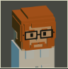
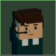

The reference game is not richer because it has more lines. It has more layers: a textured ground, panels with a header, a body and a foot that are different materials, cut corners, icons that carry the category, and two hues with jobs (cool structure, warm reward). Each board below is the game's own palette and type, flat and stepped, set against what the game looks like now.
1 · THE CARD — a made object, not a box
The hero card, the offer letter, the upgrade inspector and the staff directory are all "a box with text in it". The reference's card has four tiers: a tinted header strip with portrait and a right-aligned name block, a dark blurb well, a centred section label with rules running out both sides, and rows that are either lit amber plates (earned) or dark insets with a requirement slot (locked). The bottom is a key, not more card.
NOW
JAMES · THE GENERALIST
“No speciality. Point him at anything; he does it properly.”
ALWAYS: FEWER COMMITMENTS Daily Standups never pause James’s output.
LOCKED · LV 5
LOCKED · LV 10
SELECT
PROPOSED

ENGINEERINGJamesTHE GENERALIST
No speciality. Point him at anything; he does it properly.
INHERENT
FEWER COMMITMENTSDaily Standups never pause James’s own developer output.
BREAKTHROUGHS
SOMEONE ALREADY WROTE THAT
1M DEVS
ANSIBLE
THE STARS
OPERATIONSSerenaTHE PIPELINE
Builds wait on a shelf; she makes the shelf bigger and the wait shorter.
INHERENT
DEGRADED, NOT DOWNThe shelf holds two more builds before the floor stops.
BREAKTHROUGHS
AUTO-SHIP
LV 5
BLUE-GREEN
LV 10

SUPPORTMattTHE ON-CALL
Answers the tickets and the pages so nobody else has to look up.
INHERENT
HELP DESKEight heads answer tickets, flat, until his tree grows them.
BREAKTHROUGHS
SECOND HEADSET
LV 5
CALL CENTRE
LV 10
Cut corners are straight 8px chamfers via clip-path: no radius, still hard-edged. The slab is a zero-blur drop-shadow because clip-path would clip a box-shadow.
Two hues, two jobs. Cool is structure and the not-yet; amber is earned, in your hand. Today amber only means "warning", so the game never gets to say "this is yours".
The requirement is a slot (a lock and "LV 10" in its own grey chip), not a sentence the player has to parse inside a dashed outline.
2 · THE FRAME — a ground to sit on, and chrome with weight
Every window in the game floats on the room. The reference puts its screens on a textured ground (a blueprint grid), closes them with hazard-hatch bands top and bottom, flanks the title with rules that run to the edges, and numbers its steps with filled badges. The same screen below is the game menu.
NOW (keys.css)
STUDIO_OS // GAME MENU
Your studio keeps working while this menu is open.
MUSIC [ − ] ▒▒▒▒▒ [ + ]
HAPTICS [ ON ] [ OFF ]
RESUMEMAIN SCREEN
PROPOSED
‹ BACK
GAME MENU
STUDIOLEVEL 4
1SOUND
MUSIC60%
EFFECTS90%
2MOTION
The ground is one background. A 24px grid at 7% cyan on the dark floor; panels sitting on it read as placed. Today a window on the iso room has nothing under it but the swarm.
Hazard bands are a hard-stop two-colour hatch (no blend). They are the cheapest way to tell the player "this is a different room of the OS", and they could change colour by purpose: grey for menus, amber for the release reception, red for bankruptcy.
Volume is a row of cells, not a hatched bar: the same 20-cell language the reception meter already uses.
3 · THE READINGS — an icon carries the category
The status bar's four-pixel coloured tag is the right instinct (colour groups label and number) but the player still reads words. The reference never makes you read a word to know what a thing is: an icon tile leads, the number follows, the label is secondary. Tabs are cut at the corner, the way folder tabs are, and a 3px foot in the category's colour replaces the side tag.
NOW
CASH $77.0KDEVS 0SHIPPED 5VELOCITY 1.10
PROPOSED
CASH$77.0K
DEVS0
SHIPPED5
VELOCITY1.10
4 · THE KEYS — brackets that belong to the key
The game used to draw [ BRACKETS ] as text around a label to say "button", and keys.css removed them. The reference's SELECT has a different answer: a bright bar at each end of the key that is part of its silhouette. It says "button" with no characters, scales to any label length, and is how a primary key can look primary without being a bigger rectangle. Press sinks into its slab as now.